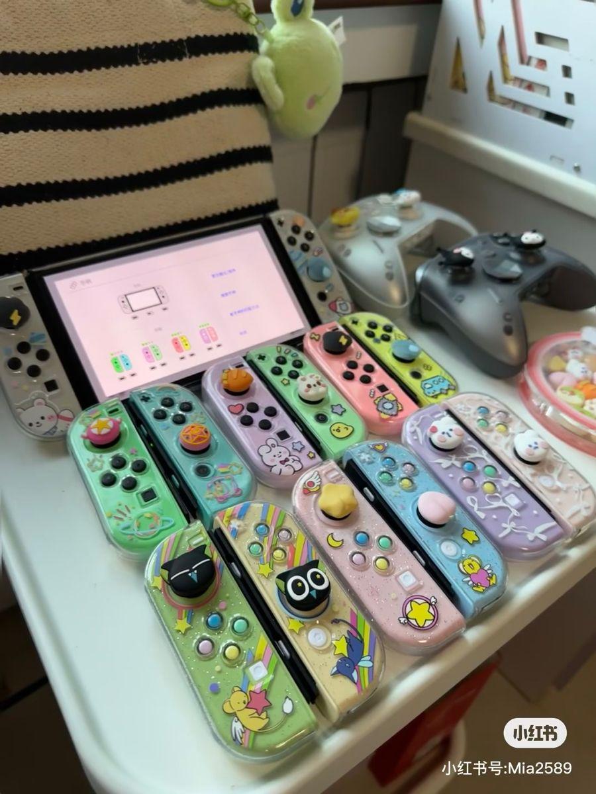
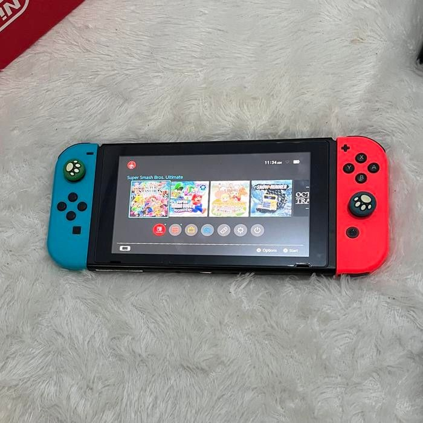

Nintendo Switch
Nintendo Switch is a flexible game console designed for both travel and living-room play. You can use it handheld on the go, prop it up with the kickstand in tabletop mode for quick multiplayer, or dock it to a TV for full-screen sessions. Setup is simple and fast, so it works well for spontaneous gatherings and short play windows. The library supports a wide range of play styles, from party and sports games for group bonding to cozy, low-pressure titles for solo downtime. Local multiplayer with detachable Joy-Con makes it easy to include friends without extra controllers, and many games support quick drop-in play. The system is compact and lightweight, which suits frequent travel, and sleep mode lets you pause and resume without losing progress. If you want to keep spending in check, you can stick to free demos, sales, and offline titles that do not require subscriptions. Overall, it balances social fun with quiet solo sessions and fits easily into a busy schedule.
Learn More
Last summer, I went to play PS5 and Nintendo a lot with my friend. I love playing games, but I never really thought of spending money on them. That time spent playing with my friend got me thinking about it. One reason is that I love organizing friend gatherings, and I thought Nintendo could be a good bonding game. It’s also small and easy to bring anywhere in the world since I travel often. The idea of playing it alone is also fun, especially because I love Nintendo Switch Sports and Cooking Crush. But I’m still thinking about whether I really need it, since I don’t play games that often. On the other hand, I also don’t want to get addicted to games.